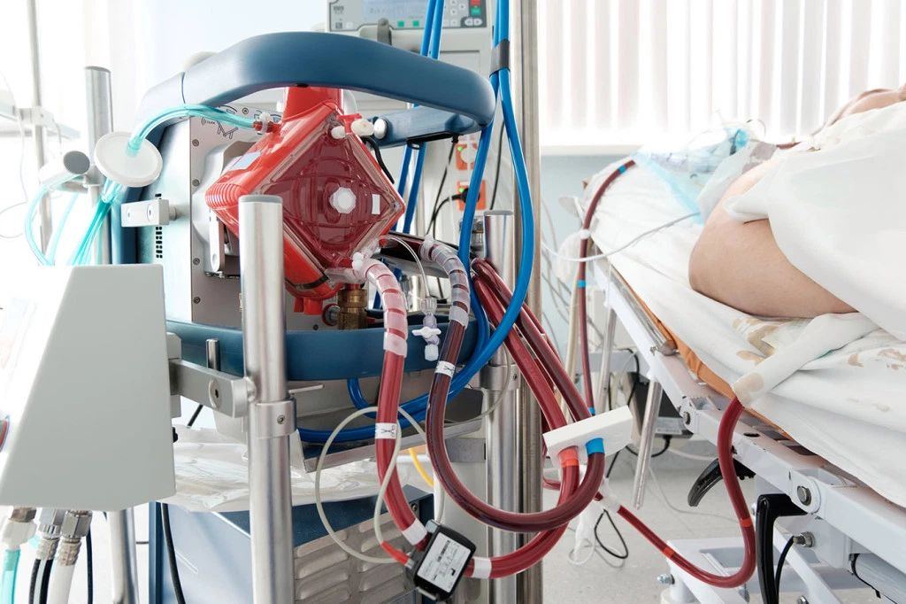

我已经把一半病人送出重症病区
原文链接 备份链接 2月17日，湖北省孝感市孝南区妇幼保健院，医护人员在进行体温测量。中青报·中青网见习记者 鲁冲/摄 本文约3780字 预计阅读时间10分钟 口述：四川大学华西医院重症医学科主任 康 焰 整理：中青报·中青网记者 王 …

继武汉大学中南医院利用 ECMO（叶克膜）成功救治了一名新冠患者之后，上海、甘肃都出现了用 ECMO 挽救危重病患者的案例。
现任台北市长、前台大医院教授柯文哲，作为将 ECMO 技术引入大中华地区的第一人曾说，“ECMO 做多了，医生会变成上帝”。
“当所有手段用尽仍无法维持患者生命，ECMO 可以延长生死的界限”，首都医科大学附属北京安贞医院心脏外科危重症中心主任侯晓彤说，“ECMO 不是灵丹妙药，它不能治疗病症。”
这个所谓 “从死神手中抢时间” 的技术，在新冠疫情中正在扮演怎样的角色？

（图源：Kaiser Health News）
并非所有危重病人都适用

ECMO 是一种用于协助重症心肺衰竭患者进行体外呼吸循环的急救设备，全称为体外膜肺氧合，也叫“人工肺”。其原理是将血液从静脉中抽出，流经膜肺氧合血红蛋白并清除二氧化碳，再将经过气体交换的血液输回患者体内。
ECMO 作为重症治疗的一项技术，本身并不是针对此次肺炎的。但新冠病毒的主要攻击对象是肺，病人通常会出现呼吸功能不全、低氧血症等等，这符合 ECMO 的适应症，所以在生命垂危的情况下，部分病人可以采用该设备进行辅助治疗。
视频 | ECMO 技术原理动画（来源：YouTube）
中南医院急救中心副主任、急危重症移动 ECMO 中心主任夏剑在接受中新社采访时表示：“接受过 ECMO 技术诊疗的病人肺部功能受到一定程度损伤，要恢复到完全正常是不可能的，但剩下的、恢复功能的肺可以支撑平时正常功能。”
但并不是所有危重病人都适合使用。一个前提是，只有病人在撤掉 ECMO 后肺功能可以恢复、其他器官功能也比较好的情况下才可以使用。而此次患病的人大多数为老年人，他们的基础病变较为严重。在这种情况下，用 ECMO 的话死亡的风险会比较高。
中国医学科学院阜外医院体外循环中心主任吉冰洋曾表示，在使用过程中还可能发生相关的意外和并发症，包括出血、血栓、感染、肢端缺血、多器官功能衰竭等，严重者甚至危及生命。所以在病患选择上，没有基础病、免疫力相对强的人会被优先使用 ECMO。
最大的问题是，目前应用 ECMO 抢救新冠肺炎患者的成功案例极为罕见。本周一，武汉金银潭医院院长张定宇接受北美华人医生群的邀请，做了一个目前新冠病毒治疗进展的报告。其中提到，危重症病人一旦上模肺 ECMO 就很少能成功拔管了，死亡率高。张定宇表示，上了 ECMO 的病人仅仅听到了中南医院的彭志勇教授救活了一个病人，其他的没见到活的病人。
面对新冠，不具备大规模推广条件
就上文提到的中南医院目前也仅有 4 台，其中 2 台是从其他医院调用的。武汉地区颇具实力的三甲医院中，武汉市人民医院仅有 1 台，武汉市中心医院有 2 台。因此，在资源有限的情况下，ECMO 只能应用于新冠肺炎病患中“重症中的重症患者”。
有数据显示，目前我国 ECMO 存量约为 400 台（不计港澳台）左右。另有专家表示，2018 年统计数据显示，中国有 260 家医院可以做 ECMO，大部分是三甲医院。相比之下，2019 年数据显示，提供 ECMO 的美国医院数量为 264 家，相差不大。

图 | 武汉大学中南医院用 ECMO 治愈新型肺炎患者（来源：中南医院医生）
国内很多医院想做 ECMO，但医院和医护人员的技术无法达到操作要求。
据了解，启动 ECMO 一般需要 5 人以上的专业医护团队，不同的类型需要不同的专业医护人员，包括心脏外科、体外循环、 ICU 医生护士、呼吸重症医生、急诊科医生、超声医生等等，对并发症处理、抗凝处理、如何撤机都需要技术处理和专业评估。
因为很多医院 ECMO 一年不到 5 例，造成专业医师稀缺，全国 260 家医院中掌握此技术的医生可能不超过 2000 人。
此外，ECMO 还需要与多种设备配合使用，比如呼吸机、血滤机、主动脉内球囊反搏等。
ECMO 作为高端技术设备，似乎价格很贵。但从机器的角度看，一台 ECMO 价格在 100 万人民币左右，在医疗器械中并不是很贵，一把超声手术刀都要三十多万。
之所以很多人觉得“ECMO 一响，黄金千万两”，主要是因为开机所需要的离心泵头、管道和肺膜等耗材价格较贵，一套费用在 5 万到 10 万不等，一位患者的耗材可以持续使用，但每天还需要 ICU、用药、监测设备的费用 1~2 万左右。
综合以上，在此次疫情中，短时间内大范围推广使用 ECMO 几乎难以实现。 ECMO 可以让病患的心肺暂时得到休息，原发病的治疗仍然是关键。
-End-
参考：

原文链接 备份链接 2月17日，湖北省孝感市孝南区妇幼保健院，医护人员在进行体温测量。中青报·中青网见习记者 鲁冲/摄 本文约3780字 预计阅读时间10分钟 口述：四川大学华西医院重症医学科主任 康 焰 整理：中青报·中青网记者 王 …
原文链接 备份链接 “彭主任，急诊室一个31岁的新冠肺炎病人心脏骤停了，您快来看看，要不要转入ICU。” 2月4日晚上7点半，武汉大学中南医院重症医学科（ICU）主任彭志勇刚从湖北天门考察疫情回到办公室，和财新记者聊了不到十分钟，就 …
原文链接 备份链接 层层战略部署之后，武汉保卫战已经开始。这是一场与病毒和传染源赛跑的立体战役。 要想打赢这场战役，我们需要在时间上，跑在病魔之前，调集重兵，救治患者；在空间上，则要寻遍传染源，斩断传播途径，将其隔离。 《三联生活周刊》 …
原文链接 备份链接 后来我回想，也挺后怕的。我接诊阿姨的时候，给她查体，她对着我咳嗽过。 口述 | 宋亚锋 整理 | 黄 祺 “突然听到一个消息，心情很不好，内心很恐惧，虽然根本不认识，但感觉很难过，一路走好，希望你的家人能够渡过难 …
原文链接 备份链接 **澎湃新闻综合报道 ** 2月18日下午，广东省举行新闻发布会，通报疫情防控相关情况。 磷酸氯喹还算不上特效药，但是对治疗有帮助 国家卫健委高级别专家组组长、中国工程院院士钟南山介绍，磷酸氯喹够不上特效药，但是非常值 …